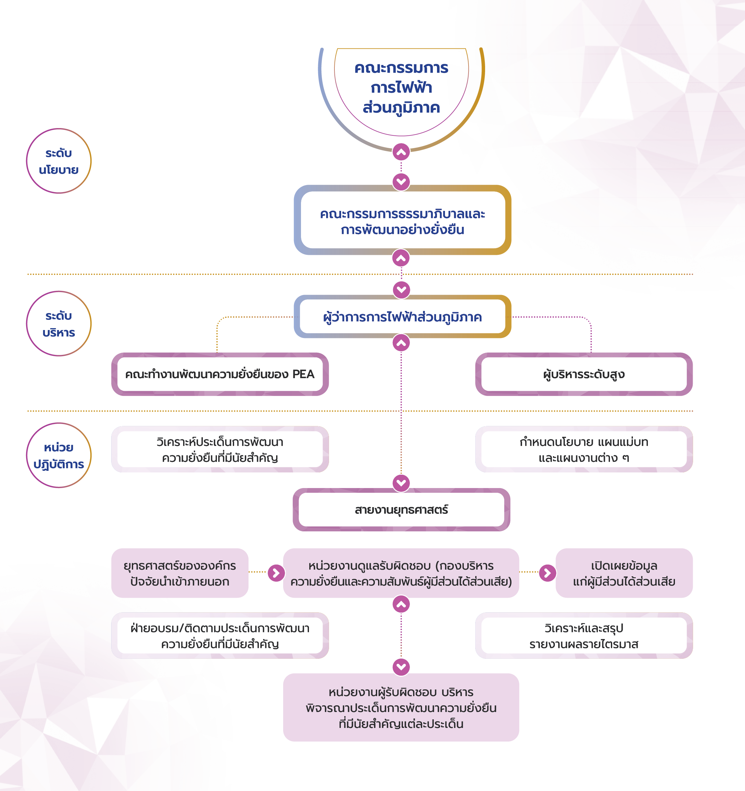
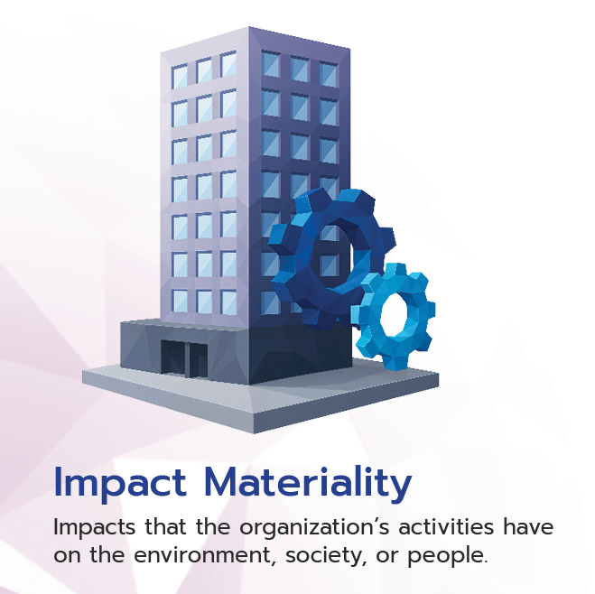
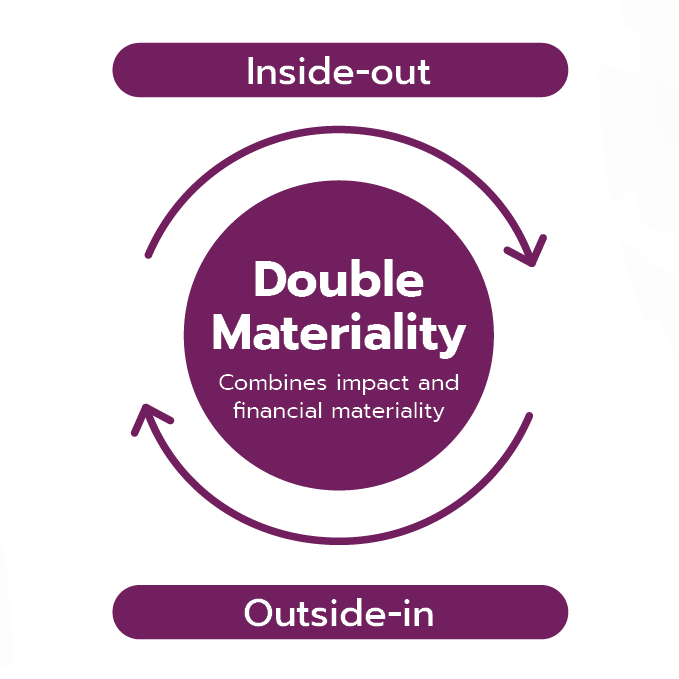
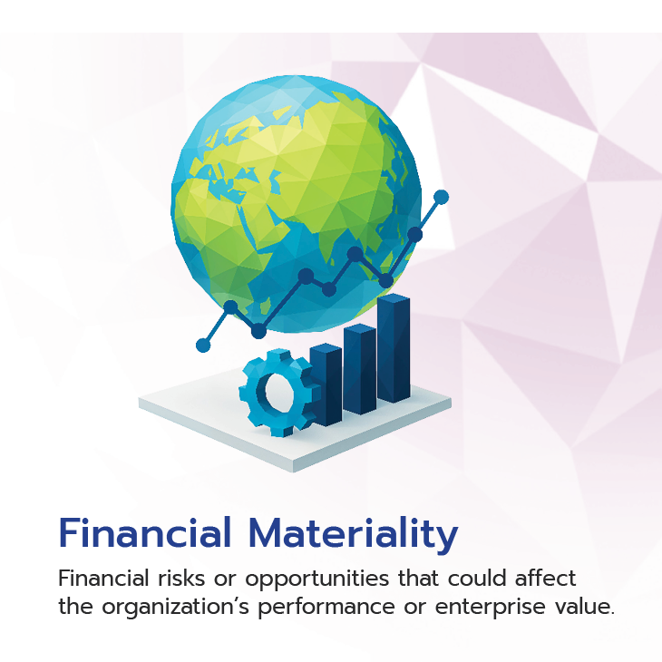
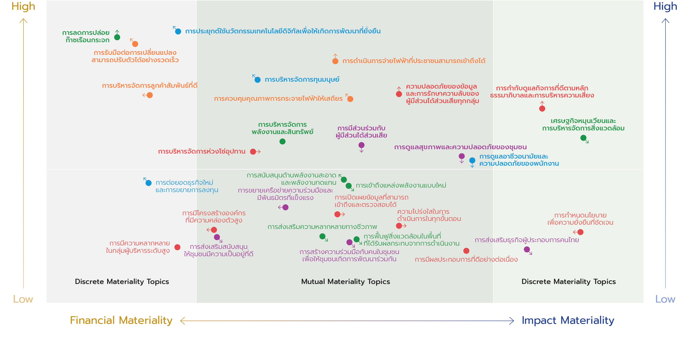

การบริหารความยั่งยืน
การบริหารจัดการความยั่งยืน
PEA มุ่งมั่นสู่การเป็นองค์กรแห่งความยั่งยืน โดยใช้มาตรฐานสากล และเป้าหมายการพัฒนาที่ยั่งยืน (SDGs) เป็นกรอบแนวทางในการบริหารความยั่งยืนและความสัมพันธ์กับผู้มีส่วนได้ส่วนเสีย ผ่านการวิเคราะห์บริบทความยั่งยืนทั้งทิศทางการดำเนินงานภายในองค์กร และปัจจัยที่อาจเกิดเป็นผลกระทบจากภายนอก พร้อมเปิดโอกาสให้ผู้มีส่วนได้ส่วนเสียทุกกลุ่ม มีส่วนร่วมในกระบวนการตัดสินใจ เพื่อสะท้อนความต้องการ และความคาดหวังที่ชัดเจน นำไปสู่การกำหนดกลยุทธ์และการดำเนินงานอย่างมีประสิทธิภาพ โดยมุ่งเน้นสร้างความเชื่อมั่น เสริมสร้างความสัมพันธ์ ลดผลกระทบเชิงลบในทุกขั้นตอนการดำเนินงาน เพื่อให้ PEA ส่งมอบคุณค่าให้กับสิ่งแวดล้อม และสังคมเติบโตอย่างยั่งยืนควบคู่กับการให้กับชุมชนและสังคมได้อย่างยั่งยืน
โครงสร้างการบริหารจัดการความยั่งยืน

การประเมินประเด็นที่มีนัยสำคัญด้านความยั่งยืน (Materiality Assessment)
PEA มีการประเมินและทบทวนประเด็นที่มีนัยสำคัญด้านความยั่งยืนเป็นประจำทุกปี ตั้งแต่ศึกษาและทบทวนบริบทองค์กรและประเด็นที่มีนัยสำคัญปีก่อนหน้า โดยวิเคราะห์ประเด็นเหล่านั้นในบริบทปัจจุบัน ทั้งทิศทางเชิงกลยุทธ์ขององค์กร ตำแหน่งทางธุรกิจในอนาคต ความเกี่ยวข้องและผลกระทบ ไปจนถึงรายละเอียดข้อมูลผลการดำเนินงานภายในองค์กร พร้อมทั้งวิเคราะห์ความเชื่อมโยงกับห่วงโซ่คุณค่า จากนั้นนำผลการวิเคราะห์ทั้งหมดเข้าสู่กระบวนการประเมินประเด็นที่มีนัยสำคัญด้านความยั่งยืนตามหลักการ Double Materiality Assessment โดยประเมินทั้ง ผลกระทบที่องค์กรมีต่อสังคม หรือสิ่งแวดล้อมครอบคลุมทุกมิติ ESG (Impact Materiality) และผลกระทบจากภายนอกที่ส่งผลกระทบต่อมูลค่าทางการเงินขององค์กร (Financial Materiality)



พร้อมนำผลการประเมินทั้ง Impact Materiality และ Financial Materiality มาจัดทำ Materiality Matrix เพื่อระบุและจัดลำดับความสำคัญของประเด็นด้านความยั่งยืนที่มีความสำคัญสูงสุด ในการกำหนดเป็นประเด็นที่มีนัยสำคัญ (Materiality Topics)
Materiality Matrix 2024
